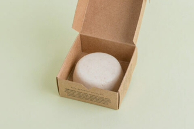

Productos destacados
Scrub Corporal
Es un exfoliante de tipo mecánico,previene la obstrucción de los poros y prepara la piel para la absorción de productos tópicos. Deja la piel suave y luminosa.
Ver másCrema Facial Hidratante
Crema facial hidratante, de rápida absorción. Ideal pieles mixtas o normales. Con manteca de mango, aceite de pepita de uva y aceite de Jojoba.
Ver más

Limpiado facial solido
El limpiador facial elimina la suciedad acumulada, exfolia suavemente la piel gracias a la avena y es un potente eliminador de granitos y puntos negros.
Ver más